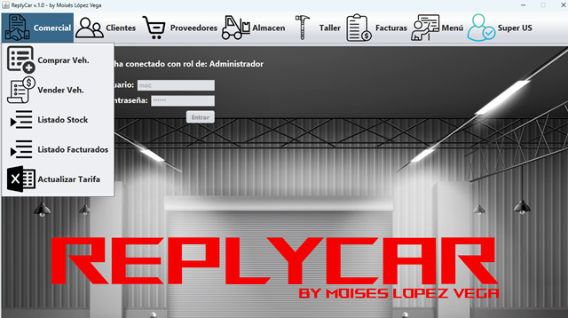
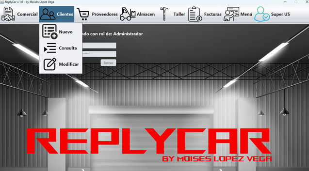
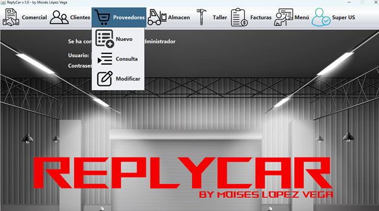
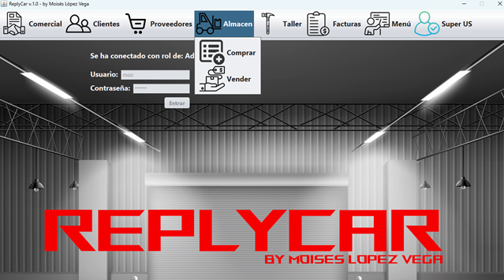
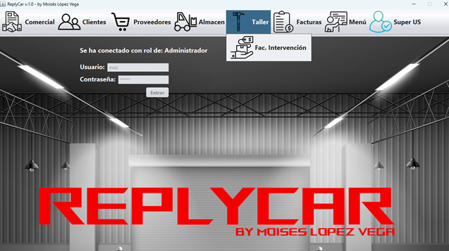
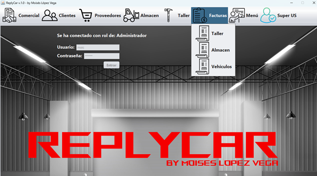
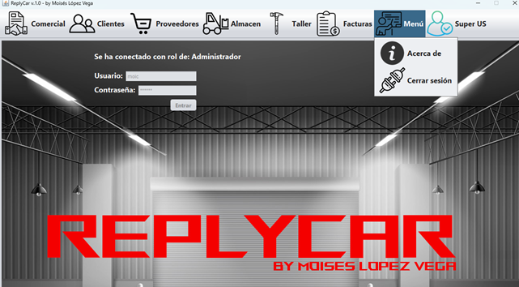
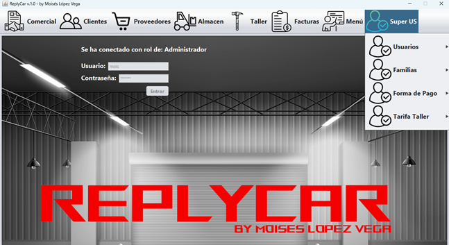

Esta aplicación sirve para organizar la venta y la postventa de una pequeña empresa que se dedica a la venta y la reparación de vehículos eléctricos. En el menú principal tiene las opciones de venta de vehículos (Comercial), la administración de Clientes y Proveedores, la venta por Almacén y la facturación de intervenciones por taller, la posibilidad de descargar las facturas realizadas en todos los departamentos y la licencia SUPER US de administración de algunos parámetros de la APP.
Esta página es la ayuda principal. La aplicación se encuentra en su primera versión y queda abierta a próximas actualizaciones.
Cabeceras: (se adjunta captura de todas las opciones del menú).
Comercial:

Clientes:

Proveedores:

Almacén:

Taller:

Facturas:

Menú:

Super US:

Nota: Pulsando F1 en la ventana principal, se abrirá esta página de ayuda.